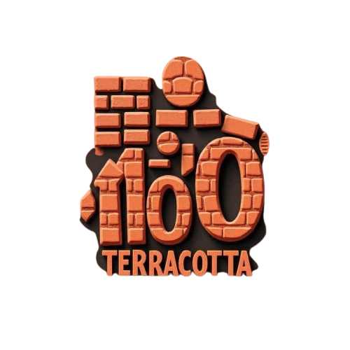

10 années de conversation autour de l'Architecture
Un évènement internationale qui connecte l'architecture, recherches,matériaux, industries et l'avenir de l'environement bâti.
06-07 November 2026 - Palais des Congres, Yaounde
10+
Editions
50+
Pays
100+
Orateurs
8000+
Participants
PLUS QU'UNE CONVERSATION
Pendant dix ans, Archi-talk a crée des plateformes pour des architects, des chercheurs, des étudiants, des industies et des institutions pour ce rencontre, poser des questions et échanger autour de la transformation de l'environement bâti. Ce qui a commencé en tant qu'une conversation est progressivement devenu une plateforme pour la connaisance, connection, experimentation et l'action.
- Découvrir
- Apprendre
- Experimenter
- Décider
- Bâtir
Découvrez de nouvelles perspectives sur l'architecture, les idées émergentes et les personnes qui façonnent l'environnement bâti.
Aujourd'hui, 10 éditions representent
50+ pays
100+ orateurs
10 universités
2000+ heures
ARCHI-TALK X
LA 10eme EDITION. LE PROCHAIN CHAPITRE
Archi-Talk X est le lieu où dix ans de conversations commencent à prendre une autre forme. La plateforme va au-delà de la simple discussion sur l’architecture pour la vivre, l’expérimenter, s’y connecter et bâtir autour d’elle.
06-07 November 2026 - Palais des Congres, Yaounde
DECOUVREZ, APPRENEZ, EXPERIMENTEZ
Conversations · Masterclasses · Living Materials Lab · Expositions · Recherche · Matériaux & & Systèmes
CONNECTER - DECIDER - BATISSEZ
Rencontres professionnelles · Rendez-vous B2B · Connexions sectorielles · Conversations stratégiques · Collaborations · Nouvelles opportunités
ARCHI-TALK X
LA 10eme EDITION. LE PROCHAIN CHAPITRE
06-07 November 2026 - Palais des Congres, Yaounde
Archi-Talk X est le lieu où dix ans de conversations commencent à prendre une autre forme. La plateforme va au-delà de la simple discussion sur l’architecture pour la vivre, l’expérimenter, s’y connecter et bâtir autour d’elle.
À qui s'adresse Archi-Talk ?
Archi-Talk rassemble des architectes et designers, des étudiants et jeunes professionnels, des chercheurs et universités, des industries et fabricants, des institutions et décideurs, des entrepreneurs, promoteurs, investisseurs et médias. Pourquoi venir ? Pour découvrir, apprendre, expérimenter, se connecter, identifier des opportunités et nouer des collaborations au sein d'un même écosystème.
ARCHITECTURE x RECHERCHE x INDUSTRIE x TECHNOLOGIE x ÉDUCATION x INSTITUTIONS
En quoi Archi-Talk est-il différent ?
De nombreux événements parlent, exposent, enseignent, vendent ou réseaautent. Archi-Talk connecte ces dimensions et les transforme en un parcours continu : PARLER -> APPRENDRE -> TESTER -> DOCUMENTER -> SE CONNECTER -> BÂTIR. Sa différence réside dans la combinaison d'un héritage de 10 éditions, d'un écosystème interdisciplinaire et d'une culture renforcée de l'expérimentation et de l'application concrète.
VENEZ POUR LA CONVERSATION. RESTEZ POUR CE QU'ELLE PEUT BÂTIR.
Nos Partenaires


Archi-Talk grandit grâce au soutien et à la collaboration d'institutions, d'industries, d'universités, de médias et de partenaires de l'innovation.
Bâtir ensemble. Grandir ensemble.
S'inscrire